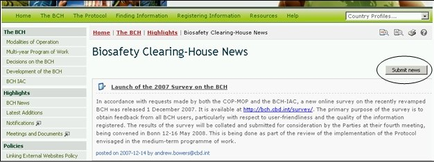
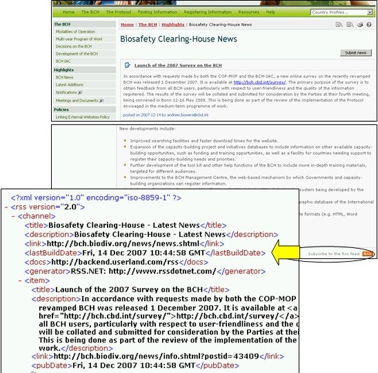

生物安全信息交换所新闻将用户链接进入最新动态部分。该部分将生物安全信息交换所中央门户网站上的变化进行更新。注册用户可在本页通过使用按钮登记生物安全信息交换所新闻。

图 16
在 生物安全信息交换所新闻 页面右下方是 Subscribe to the Rss feed （订阅Rss feed ）钮, 将用户带入RSS新闻页面。该页简要介绍了 feeds的功能，提供了如何进一步学习了解feeds 的链接，并提供了 Subscribe to this feed（订阅该feed）的链接。

图 17